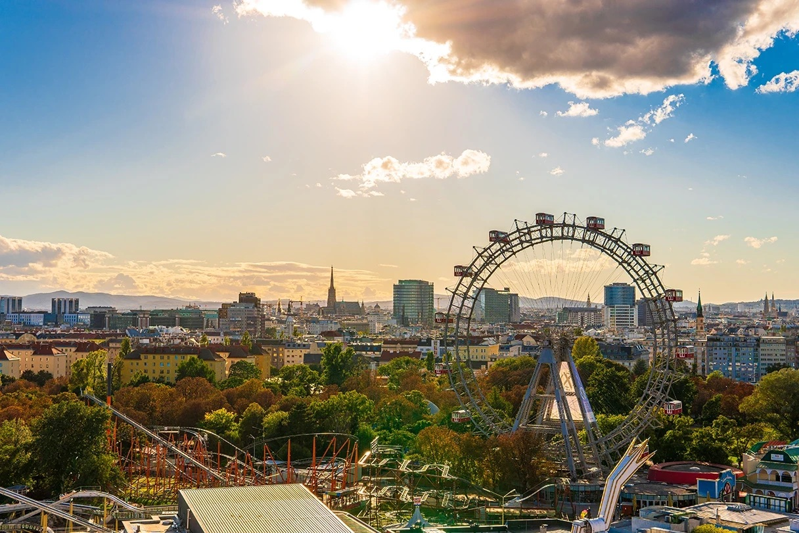
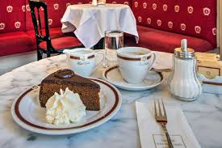
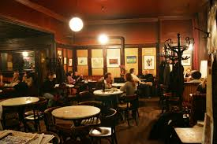

Why Vienna?
Vienna, the city of music and imperial glory
Vienna has long been considered one of the world's great cities. As the former capital of the Habsburg Empire, it boasts stunning architecture, world-class museums, and a rich cultural heritage that stretches back centuries. From the majestic Schönbrunn Palace to the iconic Ringstrasse boulevard, every corner of Vienna tells a story.
Beyond its imperial past, Vienna pulses with modern energy. Its cozy coffee houses, vibrant food markets like the Naschmarkt, and legendary opera scene make it a city that effortlessly blends the old with the new. Whether you're strolling through the Prater park or sipping a Melange in a Viennese café, the city never fails to enchant.
CAFÉS
My favorite cafés in Vienna

Café Central
One of Vienna's most iconic coffeehouses, housed in a stunning neo-Gothic palace. A true institution since 1876.
Address:
Herrengasse 14, 1010 Wien
What I like about it
The architecture alone is worth the visit – soaring arched ceilings and live piano music make every coffee feel like an occasion.

Café Sacher
Home of the legendary Original Sacher-Torte. This elegant café at Hotel Sacher is a Viennese icon since 1876.
Address:
Philharmoniker Str. 4, 1010 Wien
What I like about it
Nothing beats a slice of the original Sachertorte with whipped cream and a cup of Viennese Melange in this legendary setting.

Café Hawelka
A beloved bohemian institution in the heart of the first district, famous for its warm atmosphere and fresh Buchteln pastries in the evening.
Address:
Dorotheergasse 6, 1010 Wien
What I like about it
It feels like stepping back in time – the dimly lit rooms, vintage décor, and the smell of fresh coffee make it irresistible.
Gallery
Songs about Vienna
Vienna at a glance
| Fact | Info |
|---|---|
| Population | 1.9 million |
| Country | Austria |
| Language | German |
| Currency | Euro (€) |
| Best time to visit | April – October |